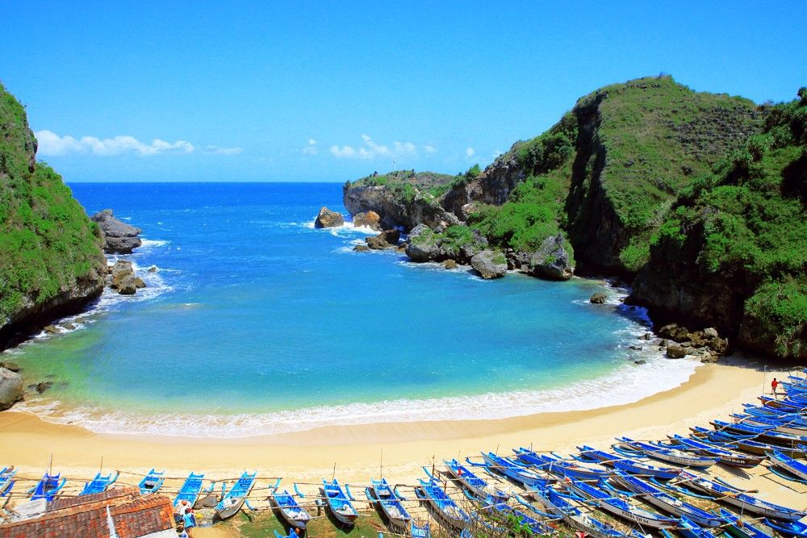

Berjarak sekitar 70 km dari pusat kota Jogja, pantai Siung bisa ditempuh dengan waktu tempuh sekitar dua jam. Pantai ini memiliki batu-batu karang berukuran besar. Penamaan pantai ini juga ada sangkut pautnya dengan batu karang. Di pantai ini terdapat sebuah batu karang besar yang bentuknya mirip dengan gigi kera atau juga disebut Siung Wanara. Kata Siung tersebut akhirnya diambil untuk menamakan pantai cantik ini. Dalam bahasa Jawa siung artinya adalah gigi taring.Untuk kamu yang hobby panjat tebing, pantai Siung adalah tempat yang asik untuk menyalurkan hobby tersebut. Tebing-tebing di pantai Siung banyak yang dimanfaatkan untuk melakukan panjat tebing. Adalah lebih dari 250 jalur panjat tebing yang terdapat di pantai Siung. Di pantai siung juga terdapat sebuah camping ground yang bisa kamu gunakan untuk mendirikan tenda jika kamu ingin menghabiskan malam di pantai Siung.Pantai Siung berada di Dusun Wates, Desa Purwodadi, Kecamatan Tepus
Pok Tunggal adalah salah satu pantai paling cantik yang ada di Jogja. Pasir pantai di sini terlihat putih bersih dan lembut. Sama seperti pantai Siung, pantai Pok Tunggal juga dikelilingi oleh tebing-tebing karang yang membuat pemandangan semakin indah. Pantai Pok Tunggal ini cenderung baru. Pantai ini baru mulai booming mulai tahun 2012. Pantai ini memiliki beberapa keuikan. Salah satunya adalah keberadaan sumber air tawar yang berasal dari aliran sungai bawah tanah Penamaan pantai ini diambil dari sebuah pohon yang terdapat disana. Pantai ini masih berada di kecamatan yang sama dengan pantai Siung yakni kecamatan Tepus
Nama pantai ini sebenarnya adalah pantai Pulang Sawal atau disingkat dengan pantai Pulsa. Indrayanti sebenarnya adalah nama pemiliki sebuah cafe disana. Namun, orang-orang sudah terlanjur mengenal pantai ini dengan nama pantai Indrayanti. Masih berada di kecamatan Tepus, pantai Indrayanti memiliki pasir putih serta air yang bersih. Asyik sekali untuk bermain-main air Pantai Pulang Sawal alias Pantai Indrayanti ini sudah cukup ramai namun keasrian pantai ini masih terjaga dengan sangat baik. Pantai ini juga sudah cukup modern. Disana sudah terdapat penginapan, cafe serta restoran. Pantai ini juga dikelilingi oleh batu-batu karang berukuran besar. Terdapat pula gazebo-gazebo yang bisa digunakan untuk bersantai sambil menikmati udara pantai yang sejuk dan menenangkan